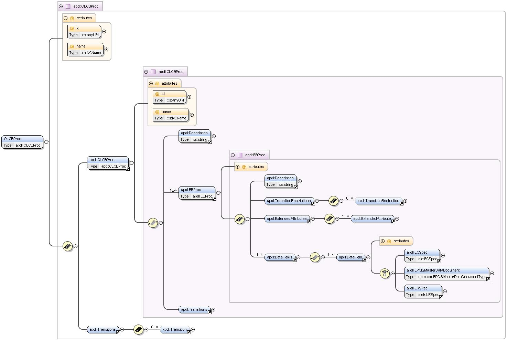
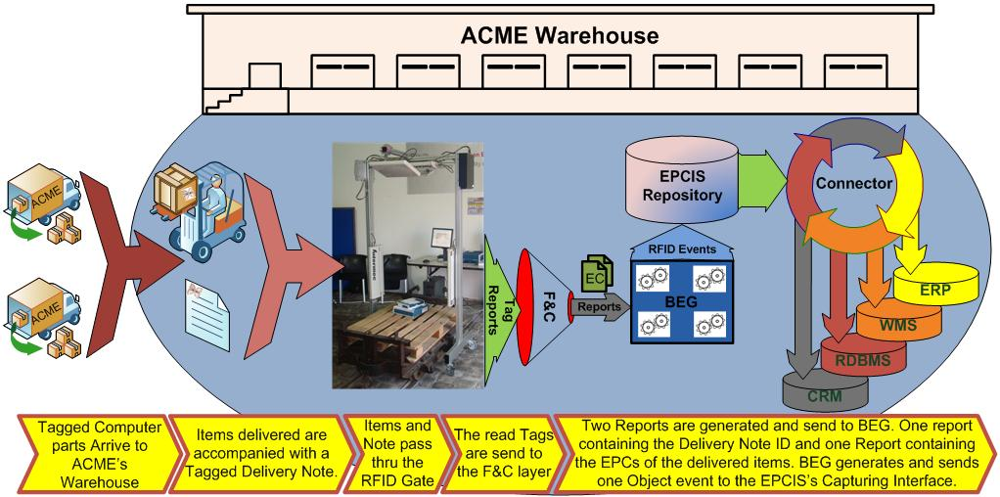

ASPIRE Process Description Language (APDL)
APDL Specification
The AspireRFID Process Description Language (APDL) Specification has a structure as shown in the figure below.

The root element that may contain the description of a complete open loop business process, such as a supply chain, is the Open Loop Composite Business Process (<OLCBProc/>).
An OLCBProc element consists of the following:
- a set of Closed Loop Composite Business Process (<CLCBProc/>) elements, capable of describing complete closed loop supply chain scenarios. A CLCBProc elemtent consists of:
- A Description (<Description/>) element.
- A set of Elementary Business Process (<EBProc/>) elements. EBProc's are the most important elements in the APDL definition since the whole process can be broke down to Elementary Business process. Each one of them carries information that the AspireRfid middleware requires in order to be configured. An EBProc element contains:
- A Description (<Description/>) element, with a simple description of the process.
- A TransitionRestrictions (<TransitionRestrictions/>) element, containing a set of TransitionRestriction (<TransitionRestriction/>) elements.
- An ExtendedAttributes (<ExtendedAttributes/>) element, containing a set of ExtendedAttribute (<ExtendedAttribute/>) elements. This element is used in order to store the basic configuration data, for instance the ECSpec Subscription URI, and the element's graphical representation data.
- A set of DataFields, that include the required ECSpec (<ECSpec/>), LRSpec (<LRSpec/>) and Master Data (<EPCISMasterDataDocument/>) documents.
- A Transitions (<Transitions/>) element, that carries the Elementary Business Process context-related semantics description of the ransitions between them. The Transition element is based on the XPDL V1.0 specification.
- A Transitions (<Transitions/>) element, in the same fashion as in the EBProc element, regarding Closed Loop Composite Business processes this time.
Note that the description is not complete; the aim is to provide a general overview for the understanding of the basic concepts behind the APDL inception. A complete reference on the structure and a means to assure creation of valid APDL files is provided by the corresponding XSD (XML Schema Definition) document:
apdl.xsd.
Describing an RFID Workflow Process Scenario Using APDL
In this example we will describe how an APDL specification file can be defined in order to configure the whole middleware serving a warehouse receiving process.
Problem description
A Company Named "Acme" is a Personal Computer Assembler and collaborates with a Microchip Manufacturer that provides it with the required CPUs. Acme, at regular basis places orders to the Microchip Manufacturer for specific CPUs. Acme owns a central building with three warehouses. The first warehouse named Warehouse1 has 2 Sections named Section1 and Section2, respectively. Section1 has an entrance point where the delivered goods arrive.
Acme needs a way to automatically receive goods at Warehouse1 Section1 and inform its Warehouse Management System (WMS) for the new product availability and the correct completeness of each transaction.
Solution Requirements
An RFID Portal should be placed to Acme's Warehouse1 Section1 entrance point which will be called ReadPoint1. The RFID portal will be equipped with one Reader WarehouseRfidReader1. The received goods should get equipped with preprogrammed RFID tags from their "Manufacturer". The received goods should be accompanied with a preprogrammed RFID enabled delivery document. And finally the middleware should be configured for the specific scenario.
Building the Required APDL Specification File
For this solution we need to build an CLCBProc as shown below (of id: urn:epcglobal:fmcg:bti:acmesupplying) which will include ACME’s Elementary Business Processes. We are dealing only with one company so defining other Close Loop Business Processes will not be required.
<OLCBProc>
<!-- AspireRFID Process Description (Language Specification) --> <CLCBProc id="urn:epcglobal:fmcg:bti:acmesupplying" name="CompositeBusinessProcessName">
<!-- RFID Composite Business Process Specification (the ID will be the Described Transactions's URI)-->
<Description>Acme Supply Chain</Description> <EBProc Id="CLCBProcEnd" Name="CLCBProcEnd"/> <EBProc Id="CLCBProcStart" Name="CLCBProcStart"/> <EBProc id="urn:epcglobal:fmcg:bte:acmewarehouse1receive" name="AcmeWarehouse3Ship"/> <Transitions/>
</CLCBProc></OLCBProc>
The EBProcesses we are going to include to the CLCBProc are the CLCBProcStart and CLCBProcEnd which are only used for the Start and Stop graphical representation of the CLCBProc. Finally, the AcmeWarehouse3Ship EBProc is included which will describe ACME's Business Scenario solution as shown above. For describing the AcmeWarehouse3Ship (see code below) except the Transition Restrictions which are used for describing the way one EBProc is related to one another, the Extended Attributes which are used for the process graphical representation and the AspireRFID Runtime configuration (e.g. ECSpecSubscriptionURI) the most important role for the completion of the "puzzle" is undertaken from the DataFields element.
<EBProc id="urn:epcglobal:fmcg:bte:acmewarehouse1receive"
name="AcmeWarehouse3Ship">
<!-- Elementary RFID Business Process Specification (the ID will be the
Described Event's URI)-->
<Description>Acme Warehouse 3 Receiving ReadPoint5 Gate3</Description>
<TransitionRestrictions>
<TransitionRestriction>
<Join Type="AND"/>
</TransitionRestriction>
</TransitionRestrictions>
<ExtendedAttributes>
<ExtendedAttribute Name="XOffset" Value="204"/>
<ExtendedAttribute Name="YOffset" Value="204"/>
<ExtendedAttribute Name="CellHeight" Value="30"/>
<ExtendedAttribute Name="CellWidth" Value="313"/>
<ExtendedAttribute Name="ECSpecSubscriptionURI" Value="http://localhost:9999"/>
<ExtendedAttribute Name="DefinedECSpecName" Value="Warehouse3RecievingObjectEvent"/>
<!-- The DefinedLRSpecNames can be collected from the defined
logicalReaders names at the ECSpec -->
<!-- For the BEG configuration the port can be collected from the
"ECSpecSubscriptionURI" value
and the event to serve from the EBPSpec id -->
</ExtendedAttributes>
<DataFields>
</DataFields>
</EBProc>
DataFields contains the specification files required to configure the AspireRFID F&C server (by defining the ECSpec and LRSpec) and the Business Event Generator (By defining the Transaction Vocabulary at the EPCIS repository Master Data through an EPCISMasterDataDocument).
ECSpec definition
To Configure the F&C module, an ECSpec is required for creating Object Events for the Class of "products" and the Class of "receiving notes" that we expect to pass through the gate and that concerns our transaction. For the "bizTransactionIDs" reportSpec we will set the "receiving notes" Class ID's and for the "transactionItems" reportSpec we will set the "received items" Class ID's.
- So the "receiving notes" Class is:
- urn:epc:pat:gid-96:145.12.
- and the "received items" Classes are:
- urn:epc:pat:gid-96:145.233.
- urn:epc:pat:gid-96:145.255.*
The ECSpec DataField that should be created is shown below. Note that at the configuration time the ECSpec name that will be used is the ECSpec DataField ID and at the ECRepot names the EBProc’s ID will be concatenated to them for example the bizTransactionIDs will become bizTransactionIDs_urn:epcglobal:fmcg:bte:acmewarehouse1receive and the transactionItems will become transactionItems_urn:epcglobal:fmcg:bte:acmewarehouse1receive that are required to be delivered to the BEG engine.
<DataField id="urn:epcglobal:fmcg:bte:acmewarehouse1receive_ecspec" type="ECSpec" name="RecievingECSpec">
<ECSpec includeSpecInReports="false">
<logicalReaders>
<logicalReader>SmartLabImpinjSpeedwayLogicalReader</logicalReader>
</logicalReaders>
<boundarySpec>
<repeatPeriod unit="MS">4500</repeatPeriod>
<duration unit="MS">4500</duration>
<stableSetInterval unit="MS">0
</stableSetInterval>
</boundarySpec>
<reportSpecs>
<reportSpec reportOnlyOnChange="false" reportName="bizTransactionIDs" reportIfEmpty="true">
<reportSet set="CURRENT"/>
<filterSpec>
<includePatterns>
<includePattern>
urn:epc:pat:gid-96:145.12.*
</includePattern>
</includePatterns>
<excludePatterns/>
</filterSpec>
<groupSpec/>
<output includeTag="true" includeRawHex="true" includeRawDecimal="true" includeEPC="true" includeCount="true"/>
</reportSpec>
<reportSpec reportOnlyOnChange="false" reportName="transactionItems" reportIfEmpty="true">
<reportSet set="ADDITIONS"/>
<filterSpec>
<includePatterns>
<includePattern>urn:epc:pat:gid-96:145.233.*</includePattern>
<includePattern>urn:epc:pat:gid-96:145.255.*</includePattern>
</includePatterns>
<excludePatterns/>
</filterSpec>
<groupSpec/>
<output includeTag="true" includeRawHex="true" includeRawDecimal="true" includeEPC="true" includeCount="true"/>
</reportSpec>
</reportSpecs>
<extension/>
</ECSpec>
</DataField>
LRSpec Definition
For the LRSpec DataField definition the dynamic LRSpec definition of an Impinj Speedway LLRP reader is used as shown below where at the configuration time the LRSpec DataField's name (SmartLabImpinjSpeedwayLogicalReader) will be used as the Logicals Reader name which is included also at the ECSpec's LogicalReader list.
<DataField id="urn:epcglobal:fmcg:bte:acmewarehouse1receive_lrspec"
type="LRSpec" name=" SmartLabImpinjSpeedwayLogicalReader">
<LRSPec>
<isComposite>false</isComposite>
<readers/>
<properties>
<property>
<name>Description</name>
<value>This Logical Reader consists of read point 1,2,3</value>
</property>
<property>
<name>ConnectionPointAddress</name>
<value>192.168.212.238</value>
</property>
<property>
<name>ConnectionPointPort</name>
<value>5084</value>
</property>
<property>
<name>ReadTimeInterval</name>
<value>1000</value>
</property>
<property>
<name>PhysicalReaderSource</name>
<value>1,2,3</value>
</property>
<property>
<name>RoSpecID</name>
<value>1</value>
</property>
<property>
<name>ReaderType</name>
<value>org.ow2.aspirerfid.ale.server.readers.llrp.LLRPAdaptor</value>
</property>
</properties>
</LRSPec>
</DataField>
BEG Module Required Data Field
The Business Event Generator needs to get the Transaction Event to serve which is the Warehouse1DocDoorReceive (with URI urn:epcglobal:fmcg:bte:acmewarehouse1receive) and the description of it from the Information Sharing module repository which should be set up using the information from the table below.
| Business Transaction Attribute Name | Business Transaction Attribute Value |
|---|
| urn:epcglobal:epcis:mda:event_name | Warehouse1DocDoorReceive |
| urn:epcglobal:epcis:mda:event_type | ObjectEvent |
| urn:epcglobal:epcis:mda:business_step | urn:epcglobal:fmcg:bizstep:receiving |
| urn:epcglobal:epcis:mda:business_location | urn:epcglobal:fmcg:loc:acme:warehouse1 |
| urn:epcglobal:epcis:mda:disposition | urn:epcglobal:fmcg:disp:in_progress |
| urn:epcglobal:epcis:mda:ecspec_name | ECSpecObjectEventFiltering |
| urn:epcglobal:epcis:mda:read_point | urn:epcglobal:fmcg:loc:Warehouse1DocDoor |
| urn:epcglobal:epcis:mda:transaction_type | urn:epcglobal:fmcg:btt:receiving |
| urn:epcglobal:epcis:mda:action | OBSERVE |
We create an EPCISMasterDataDocument DataField as shown in the following code. Note that we are not including the required from the BEG engine ECReport names at the description because this information can be retrieved from the EBProc's ID and the Event Type. Because this is an Object Event we know that two reports are required the bizTransactionIDs and the transactionItems where the EBProc ID urn:epcglobal:fmcg:bte:acmewarehouse1receive will get concatenated.
<DataField id="urn:epcglobal:fmcg:bte:acmewarehouse1receive_masterdata"
type="EPCISMasterDataDocument" name="RecievingMasterData">
<EPCISMasterDataDocument>
<EPCISBody>
<VocabularyList>
<Vocabulary
type="urn:epcglobal:epcis:vtype:BusinessTransaction">
<VocabularyElementList>
<VocabularyElement id="urn:epcglobal:fmcg:bte:acmewarehouse1receive">
<attribute id="urn:epcglobal:epcis:mda:event_name">Warehouse1DocDoorReceive</attribute>
<attribute id="urn:epcglobal:epcis:mda:event_type">ObjectEvent</attribute>
<attribute id="urn:epcglobal:epcis:mda:business_step">urn:epcglobal:fmcg:bizstep:receiving</attribute>
<attribute id="urn:epcglobal:epcis:mda:business_location">urn:epcglobal:fmcg:loc:acme:warehouse1</attribute>
<attribute id="urn:epcglobal:epcis:mda:disposition">urn:epcglobal:fmcg:disp:in_progress</attribute>
<attribute id="urn:epcglobal:epcis:mda:read_point">urn:epcglobal:fmcg:loc:rp:warehouse1docdoor</attribute>
<attribute id="urn:epcglobal:epcis:mda:transaction_type">urn:epcglobal:fmcg:btt:receiving</attribute>
<attribute id="urn:epcglobal:epcis:mda:action">OBSERVE</attribute>
</VocabularyElement>
</VocabularyElementList>
</Vocabulary>
</VocabularyList>
</EPCISBody>
</EPCISMasterDataDocument>
</DataField>
Process Description
As visualized at the figure below, the order arrives to ACME's premises. ACME's RFID portal (ReadPoint1) reads the deliveryID and all the products that follow with the help of WarehouseRfidReader1. AspireRfid ALE filters out the readings and sends two reports to AspireRfid BEG, one with the deliveryID and one with all the products tags. AspireRfid BEG collects these reports, binds the deliveryID with the products tags and sends this event to the AspireRfid EPCIS Repository. The AspireRfid EPCIS Repository informs the Connector for the incoming event which in his turn sends this information to ACME's WMS. When the WMS confirms that all the requested products were delivered it sends a "transaction finish" message to the AspireRfid Connector which in his turn unsubscribe for the specific deliveryID and sends a "transaction finish" to the RFID Repository.

Conclusions
In this scenario, we demonstrated how APDL can be used in order to model a real-world scenario. Specifically, we present and analyze the steps that the
APE will follow while parsing an APDL file in order to configure end-to-end a realistic real-world scenario.
You can download the APDL file (
acme.apdl) that contains the complete RFID solution.
 PDF
PDF History
History


{kind=link}
{kind=link}